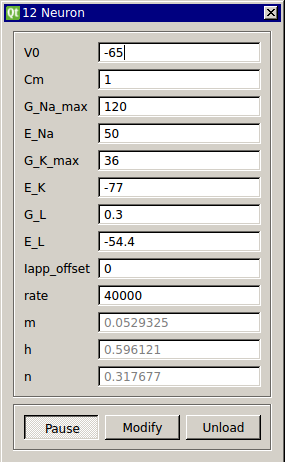

Neuron (Hodgkin-Huxley)
Requirements: None
Limitations: None

This module is already included in RTXI by default as the “neuron” module but is provided here as a template for creating your own models. This is the classic Hodgkin-Huxley model neuron.
Note that in RTXI 2.0 and subsequent releases, this module is separated from the default RTXI install. Users can add it if needed.
Input Channels
- input(0) - Iapp : applied current (A)
Output Channels
- output(0) - Vm : membrane voltage (V)
Parameters
- V0 - voltage (mV)
- Cm - membrane capacitance (uF/cm^2)
- G_Na_max - max. Na+ conductance density (mS/cm^2)
- E_Na - Na+ reversal potential (mV)
- G_K_max - max. K+ conductance density (mS/cm^2)
- E_K - K+ reversal potential (mV)
- G_L - leak channel conductance density (mS/cm^2)
- E_L - leak channel reversal potential (mV)
- Iapp_offset - offset current added to input (uA/cm^2)
- rate - rate of integration (Hz)
States
- m - sodium activation
- h - sodium inactivation
- n - potassium inactivation